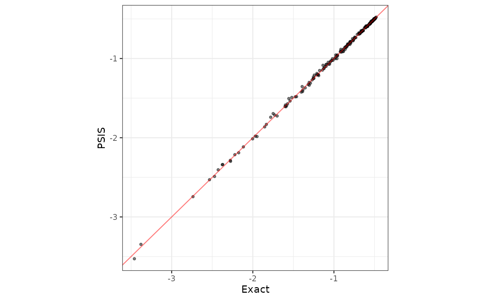
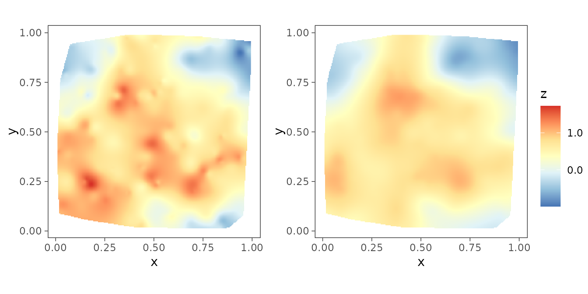
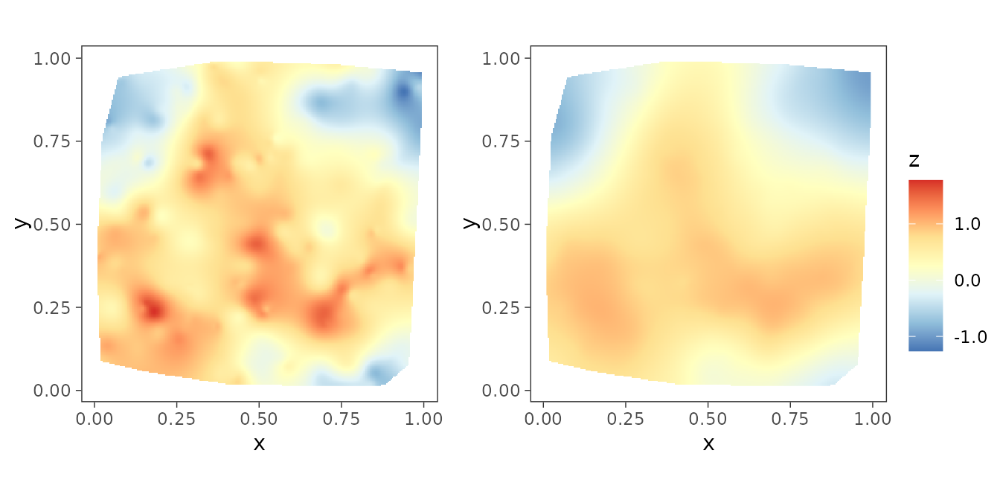

Introduction
Geostatistics refers to the study of a spatially distributed variable of interest, which in theory is defined at every point over a bounded study region of interest. Statistical modelling and analysis for spatially oriented point-referenced outcomes play a crucial role in diverse scientific applications such as earth and environmental sciences, ecology, epidemiology, and economics. With the advent of Markov chain Monte Carlo (MCMC) algorithms, Bayesian hierarchical models have gained massive popularity in analyzing such point-referenced or, geostatistical data. These models involve latent spatial processes characterized by spatial process parameters, which besides lacking substantive relevance in scientific contexts, are also weakly identified and hence, impedes convergence of MCMC algorithms. Thus, even for moderately large datasets (~ or higher), the computation for MCMC becomes too onerous for practical use.
We introduce the R package spStack that implements
Bayesian inference for a class of geostatistical models, where we
obviate the issues mentioned by sampling from analytically available
posterior distributions conditional upon some candidate values of the
spatial process parameters and, subsequently assimilate inference from
these individual posterior distributions using Bayesian predictive
stacking. Besides delivering competitive predictive performance as
compared to fully Bayesian inference using MCMC, our proposed algorithm
is embarrassingly parallel, thus drastically improves runtime and
elevating the utility of the package for a diverse group of
practitioners with limited computational resources at their disposal.
This package, to the best of our knowledge, is the first to implement
stacking for Bayesian analysis of spatial data.
Technical details surrounding the methodology can be found in the
articles Zhang, Tang, and Banerjee (2024) which discuss the case
where the distribution of the point-referenced outcomes are Gaussian,
and, in Pan et al. (2024) where the case of
non-Gaussian outcomes is explored. The code for this package is written
primarily in C/C++ with additional calls to FORTRAN routines for
optimized linear algebra operations. We leverage the
F77_NAME macro to interface with legacy FORTRAN functions
in conjunction with efficient matrix computation libraries such as BLAS (Basic Linear Algebra
Subprograms) and LAPACK (Linear
Algebra Package) to implement our stacking algorithm.
The remainder of the vignette evolves as follows - the next two sections discuss Bayesian hierarchical spatial models for Gaussian and non-Gaussian outcomes, which is followed by a section providing brief details on predictive stacking and a section dedicated for illustration of functions in the package.
Bayesian Gaussian spatial regression models
Let
be a be a set of
spatial locations yielding measurements
with known values of predictors at these locations collected in the
full rank matrix
.
A customary geostatistical model is
where
is the
vector of slopes,
is a zero-centered spatial Gaussian process on
with spatial correlation function
characterized by process parameters
,
is the spatial variance parameter (“partial sill”) and
are i.i.d. with variance
(“nugget”) capturing measurement error. The spatial process
is assumed to be independent of the measurement errors
.
Let
denotes the realization of the spatial process on
and
correlation matrix
.
We build a conjugate Bayesian hierarchical spatial model,
where we fix the
noise-to-spatial variance ratio
,
the process parameters
and the hyperparameters
,
,
and
.
In this package, we use the Matern covariogram specified by spatial
decay parameter
and smoothness parameter
i.e.,
,
given by
We utilize a composition
sampling strategy to sample the model parameters from their joint
posterior distribution which can be written as
We proceed by first
sampling
from its marginal posterior, then given the samples of
,
we sample
and subsequently, we sample
conditioned on the posterior samples of
and
(Banerjee
2020). The function spLMexact() delivers samples
from this posterior distribution. More details can be found in Zhang, Tang, and Banerjee (2024).
Bayesian non-Gaussian spatial regression models
Analyzing non-Gaussian spatial data typically requires introducing spatial dependence in generalized linear models through the link function of an exponential family distribution. Let be the outcome at location endowed with a probability law from the natural exponential family, which we denote by for some positive parameter and unit log partition function . Fixed effects regression and spatial dependence, e.g., , is introduced in the natural parameter, where is a vector of predictors referenced with respect to , is a vector of slopes measuring the trend, is a zero-centered spatial process on specified by a scale parameter and a spatial correlation function with consisting of spatial-temporal decay and smoothness parameters.
Unlike in Gaussian likelihoods, inference is considerably encumbered by the inability to analytically integrate out the random effects and reduce the dimension of the parameter space. Iterative algorithms such as Markov Chain Monte Carlo (MCMC), thus attempt to sample from a very high-dimensional posterior distribution, and convergence is often hampered by high auto-correlations and weakly identified spatial process parameters .
We consider the following three cases -
- Point-referenced Poisson count data: Here and .
- Point-referenced binomial count data: Here for each and .
- Point-referenced binary data: Here and .
Following Bradley and Clinch (2024), we introduce a Bayesian hierarchical spatial model as where denotes the discrepancy parameter. We fix the spatial process parameters , the boundary adjustment parameter and the hyperparameters , , and . The term is known as the fine-scale variation term which is given a conditional generalized conjugate multivariate distribution () as prior. For details, see Pan et al. (2024).
Predictive stacking
Following Yao et al. (2018), we consider a set of candidate models based on a grid of values of the parameters in for the Gaussian case, and for the non-Gaussian case, as will be supplied by the user. We build a set of candidate models based on the Cartesian product of the collection of values for each individual parameter as . Then, for each , we sample from the posterior distribution under the model and find leave-one-out predictive densities . Then we solve the optimization problem to find the optimal stacking weights . After obtaining the optimal stacking weights, posterior inference of any quantity of interest subsequently proceed from the stacked posterior,
Illustrations
In this section, we thoroughly illustrate our method on synthetic Gaussian as well as non-Gaussian spatial data and provide code to analyze the output of our functions. We start by loading the package.
Some synthetic spatial data are lazy-loaded which includes synthetic
spatial Gaussian data simGaussian, Poisson data
simPoisson, binomial data simBinom and binary
data simBinary. One can use the function
sim_spData() to simulate spatial data. We will be applying
our functions on these datasets.
Analysis of spatial Gaussian data
We first load the data simGaussian and set up the
priors. Supplying the priors is optional. See the documentation of
spLMexact() to learn more about the default priors.
Besides, setting the priors, we also fix the values of the spatial
process parameters and the noise-to-spatial variance ratio.
data("simGaussian")
dat <- simGaussian[1:200, ] # work with first 200 rows
muBeta <- c(0, 0)
VBeta <- cbind(c(10.0, 0.0), c(0.0, 10.0))
sigmaSqIGa <- 2
sigmaSqIGb <- 2
phi0 <- 2
nu0 <- 0.5
noise_sp_ratio <- 0.8
prior_list <- list(beta.norm = list(muBeta, VBeta),
sigma.sq.ig = c(sigmaSqIGa, sigmaSqIGb))
nSamples <- 2000We then pass these parameters into the main function.
set.seed(1729)
mod1 <- spLMexact(y ~ x1, data = dat,
coords = as.matrix(dat[, c("s1", "s2")]),
cor.fn = "matern",
priors = prior_list,
spParams = list(phi = phi0, nu = nu0),
noise_sp_ratio = noise_sp_ratio, n.samples = nSamples,
loopd = TRUE, loopd.method = "exact",
verbose = TRUE)
#> ----------------------------------------
#> Model description
#> ----------------------------------------
#> Model fit with 200 observations.
#>
#> Number of covariates 2 (including intercept).
#>
#> Using the matern spatial correlation function.
#>
#> Priors:
#> beta: Gaussian
#> mu: 0.00 0.00
#> cov:
#> 10.00 0.00
#> 0.00 10.00
#>
#> sigma.sq: Inverse-Gamma
#> shape = 2.00, scale = 2.00.
#>
#> Spatial process parameters:
#> phi = 2.00, and, nu = 0.50.
#> Noise-to-spatial variance ratio = 0.80.
#>
#> Number of posterior samples = 2000.
#>
#> LOO-PD calculation method = exact.
#> ----------------------------------------Next, we can summarize the posterior samples of the fixed effects as follows.
post_beta <- mod1$samples$beta
summary_beta <- t(apply(post_beta, 1, function(x) quantile(x, c(0.025, 0.5, 0.975))))
rownames(summary_beta) <- mod1$X.names
print(summary_beta)
#> 2.5% 50% 97.5%
#> (Intercept) 1.388249 2.129140 2.932428
#> x1 4.865843 4.954446 5.045627If interested in finding leave-one-out predictive densities (LOO-PD)
for this model, set loopd to TRUE and provide
a loopd.method. Valid inputs for loopd.method
are "exact" and "PSIS" which finds exact
LOO-PD using closed form expressions and approximate LOO-PD using Pareto
smoothed importance sampling (Vehtari, Gelman, and Gabry
2017).
mod2 <- spLMexact(y ~ x1, data = dat,
coords = as.matrix(dat[, c("s1", "s2")]),
cor.fn = "matern",
priors = prior_list,
spParams = list(phi = phi0, nu = nu0),
noise_sp_ratio = noise_sp_ratio, n.samples = nSamples,
loopd = TRUE, loopd.method = "PSIS",
verbose = FALSE)Out of curiosity, we compare the LOO-PD obtained by the two methods.
loopd_exact <- mod1$loopd
loopd_psis <- mod2$loopd
loopd_df <- data.frame(exact = loopd_exact, psis = loopd_psis)
library(ggplot2)
plot1 <- ggplot(data = loopd_df, aes(x = exact)) +
geom_point(aes(y = psis), size = 1, alpha = 0.5) +
geom_abline(slope = 1, intercept = 0, color = "red", alpha = 0.5) +
xlab("Exact") + ylab("PSIS") + theme_bw() +
theme(panel.background = element_blank(), aspect.ratio = 1)
plot1
Next, we move on to the Bayesian spatial stacking algorithm for Gaussian data. We supply the same prior list and provide some candidate values of spatial process parameters and noise-to-spatial variance ratio.
mod3 <- spLMstack(y ~ x1, data = dat,
coords = as.matrix(dat[, c("s1", "s2")]),
cor.fn = "matern",
priors = prior_list,
params.list = list(phi = c(1.5, 3, 5),
nu = c(0.5, 1, 1.5),
noise_sp_ratio = c(0.5, 1.5)),
n.samples = 1000, loopd.method = "exact",
parallel = FALSE, solver = "ECOS", verbose = TRUE)
#>
#> STACKING WEIGHTS:
#>
#> | phi | nu | noise_sp_ratio | weight |
#> +----------+-----+-----+----------------+--------+
#> | Model 1 | 1.5| 0.5| 0.5| 0.000 |
#> | Model 2 | 3.0| 0.5| 0.5| 0.000 |
#> | Model 3 | 5.0| 0.5| 0.5| 0.000 |
#> | Model 4 | 1.5| 1.0| 0.5| 0.226 |
#> | Model 5 | 3.0| 1.0| 0.5| 0.000 |
#> | Model 6 | 5.0| 1.0| 0.5| 0.774 |
#> | Model 7 | 1.5| 1.5| 0.5| 0.000 |
#> | Model 8 | 3.0| 1.5| 0.5| 0.000 |
#> | Model 9 | 5.0| 1.5| 0.5| 0.000 |
#> | Model 10 | 1.5| 0.5| 1.5| 0.000 |
#> | Model 11 | 3.0| 0.5| 1.5| 0.000 |
#> | Model 12 | 5.0| 0.5| 1.5| 0.000 |
#> | Model 13 | 1.5| 1.0| 1.5| 0.000 |
#> | Model 14 | 3.0| 1.0| 1.5| 0.000 |
#> | Model 15 | 5.0| 1.0| 1.5| 0.000 |
#> | Model 16 | 1.5| 1.5| 1.5| 0.000 |
#> | Model 17 | 3.0| 1.5| 1.5| 0.000 |
#> | Model 18 | 5.0| 1.5| 1.5| 0.000 |
#> +----------+-----+-----+----------------+--------+The user can check the solver status and runtime by issuing the following.
print(mod3$solver.status)
#> [1] "optimal"
print(mod3$run.time)
#> user system elapsed
#> 2.463 3.147 1.674To sample from the stacked posterior, the package provides a helper
function called stackedSampler(). Subsequent inference
proceeds from these samples obtained from the stacked posterior.
post_samps <- stackedSampler(mod3)We then collect the samples of the fixed effects and summarize them as follows.
post_beta <- post_samps$beta
summary_beta <- t(apply(post_beta, 1, function(x) quantile(x, c(0.025, 0.5, 0.975))))
rownames(summary_beta) <- mod3$X.names
print(summary_beta)
#> 2.5% 50% 97.5%
#> (Intercept) 0.9303819 2.185930 2.949784
#> x1 4.8678581 4.954272 5.030520Here, we compare the posterior samples of the spatial random effects with their corresponding true values.
post_z <- post_samps$z
post_z_summ <- t(apply(post_z, 1, function(x) quantile(x, c(0.025, 0.5, 0.975))))
z_combn <- data.frame(z = dat$z_true, zL = post_z_summ[, 1],
zM = post_z_summ[, 2], zU = post_z_summ[, 3])
plotz <- ggplot(data = z_combn, aes(x = z)) +
geom_point(aes(y = zM), size = 0.75, color = "darkblue", alpha = 0.5) +
geom_errorbar(aes(ymin = zL, ymax = zU), width = 0.05, alpha = 0.15,
color = "skyblue") +
geom_abline(slope = 1, intercept = 0, color = "red") +
xlab("True z") + ylab("Stacked posterior of z") + theme_bw() +
theme(panel.background = element_blank(), aspect.ratio = 1)
plotz
The package also provides functions to plot interpolated spatial
surfaces in order for visualization purposes. The function
surfaceplot() creates a single spatial surface plot, while
surfaceplot2() creates two side-by-side surface plots. We
are using the later to visually inspect the interpolated spatial
surfaces of the true spatial effects and their posterior medians.
postmedian_z <- apply(post_z, 1, median)
dat$z_hat <- postmedian_z
plot_z <- surfaceplot2(dat, coords_name = c("s1", "s2"),
var1_name = "z_true", var2_name = "z_hat")
library(ggpubr)
ggarrange(plotlist = plot_z, common.legend = TRUE, legend = "right")
Analysis of spatial non-Gaussian data
In this package, we offer functions for Bayesian analysis Poisson and binomial count data as well as binary data.
Spatial Poisson count data
We first load and plot the point-referenced Poisson count data.
data("simPoisson")
dat <- simPoisson[1:200, ] # work with first 200 observations
ggplot(dat, aes(x = s1, y = s2)) +
geom_point(aes(color = y), alpha = 0.75) +
scale_color_distiller(palette = "RdYlGn", direction = -1,
label = function(x) sprintf("%.0f", x)) +
guides(alpha = 'none') + theme_bw() +
theme(axis.ticks = element_line(linewidth = 0.25),
panel.background = element_blank(), panel.grid = element_blank(),
legend.title = element_text(size = 10, hjust = 0.25),
legend.box.just = "center", aspect.ratio = 1)
Next, we demonstrate the function spGLMexact() which
delivers posterior samples of the fixed effects and the spatial random
effects. The option family must be specified correctly
while using this function. For instance, in this example
family = "poisson". We provide fixed values of the spatial
process parameters and the boundary adjustment parameter, given by the
argument boundary, which if not supplied, defaults to 0.5.
For details on the priors and its default value, see function
documentation.
mod1 <- spGLMexact(y ~ x1, data = dat, family = "poisson",
coords = as.matrix(dat[, c("s1", "s2")]), cor.fn = "matern",
spParams = list(phi = phi0, nu = nu0),
boundary = 0.5,
n.samples = 1000, verbose = TRUE)
#> ----------------------------------------
#> Model description
#> ----------------------------------------
#> Model fit with 200 observations.
#>
#> Family = poisson.
#>
#> Number of covariates 2 (including intercept).
#>
#> Using the matern spatial correlation function.
#>
#> Priors:
#> beta: Gaussian
#> mu: 0.00 0.00
#> cov:
#> 100.00 0.00
#> 0.00 100.00
#>
#> sigmaSq.beta ~ IG(nu.beta/2, nu.beta/2)
#> sigmaSq.z ~ IG(nu.z/2, nu.z/2)
#> nu.beta = 2.10, nu.z = 2.10.
#> sigmaSq.xi = 0.10.
#> Boundary adjustment parameter = 0.50.
#>
#> Spatial process parameters:
#> phi = 2.00, and, nu = 0.50.
#>
#> Number of posterior samples = 1000.
#> ----------------------------------------We next collect the samples of the fixed effects and summarize them.
The true value of the fixed effects with which the data was simulated is
(for more details, see the documentation of the data
simPoisson).
post_beta <- mod1$samples$beta
summary_beta <- t(apply(post_beta, 1, function(x) quantile(x, c(0.025, 0.5, 0.975))))
rownames(summary_beta) <- mod1$X.names
print(summary_beta)
#> 2.5% 50% 97.5%
#> (Intercept) -0.1302807 1.9026041 4.3045317
#> x1 -0.6664152 -0.5545303 -0.4543145Next, we move on to the function spGLMstack() that will
implement our proposed stacking algorithm. The argument
loopd.controls is used to provide details on what algorithm
to be used to find LOO-PD. Valid options for the tag method
is "exact" and "CV". We use
-fold
cross-validation by assigning method = "CV"and
CV.K = 10. The tag nMC decides the number of
Monte Carlo samples to be used to find the LOO-PD.
mod2 <- spGLMstack(y ~ x1, data = dat, family = "poisson",
coords = as.matrix(dat[, c("s1", "s2")]), cor.fn = "matern",
params.list = list(phi = c(3, 7, 10), nu = c(0.5, 1.5),
boundary = c(0.5, 0.6)),
n.samples = 1000,
loopd.controls = list(method = "CV", CV.K = 10, nMC = 1000),
parallel = TRUE, solver = "ECOS", verbose = TRUE)
#>
#> STACKING WEIGHTS:
#>
#> | phi | nu | boundary | weight |
#> +----------+-----+-----+----------+--------+
#> | Model 1 | 3| 0.5| 0.5| 0.000 |
#> | Model 2 | 7| 0.5| 0.5| 0.000 |
#> | Model 3 | 10| 0.5| 0.5| 0.000 |
#> | Model 4 | 3| 1.5| 0.5| 0.000 |
#> | Model 5 | 7| 1.5| 0.5| 0.000 |
#> | Model 6 | 10| 1.5| 0.5| 0.000 |
#> | Model 7 | 3| 0.5| 0.6| 0.000 |
#> | Model 8 | 7| 0.5| 0.6| 0.000 |
#> | Model 9 | 10| 0.5| 0.6| 0.000 |
#> | Model 10 | 3| 1.5| 0.6| 0.175 |
#> | Model 11 | 7| 1.5| 0.6| 0.825 |
#> | Model 12 | 10| 1.5| 0.6| 0.000 |
#> +----------+-----+-----+----------+--------+We can extract information on solver status and runtime by the following.
print(mod2$solver.status)
#> [1] "optimal"
print(mod2$run.time)
#> user system elapsed
#> 24.320 34.959 15.036We first obtain final posterior samples by sampling from the stacked sampler.
post_samps <- stackedSampler(mod2)Subsequently, we summarize the posterior samples of the fixed effects.
post_beta <- post_samps$beta
summary_beta <- t(apply(post_beta, 1, function(x) quantile(x, c(0.025, 0.5, 0.975))))
rownames(summary_beta) <- mod3$X.names
print(summary_beta)
#> 2.5% 50% 97.5%
#> (Intercept) -0.8032363 2.0460414 3.8253354
#> x1 -0.6275769 -0.5471968 -0.4529202Finally, we analyze the posterior samples of the spatial random effects.
post_z <- post_samps$z
post_z_summ <- t(apply(post_z, 1, function(x) quantile(x, c(0.025, 0.5, 0.975))))
z_combn <- data.frame(z = dat$z_true, zL = post_z_summ[, 1],
zM = post_z_summ[, 2], zU = post_z_summ[, 3])
plotz <- ggplot(data = z_combn, aes(x = z)) +
geom_point(aes(y = zM), size = 0.75, color = "darkblue", alpha = 0.5) +
geom_errorbar(aes(ymin = zL, ymax = zU), width = 0.05, alpha = 0.15,
color = "skyblue") +
geom_abline(slope = 1, intercept = 0, color = "red") +
xlab("True z") + ylab("Stacked posterior of z") + theme_bw() +
theme(panel.background = element_blank(), aspect.ratio = 1)
plotz
We can also compare the interpolated spatial surfaces of the true spatial effects with that of their posterior median.
postmedian_z <- apply(post_z, 1, median)
dat$z_hat <- postmedian_z
plot_z <- surfaceplot2(dat, coords_name = c("s1", "s2"),
var1_name = "z_true", var2_name = "z_hat")
library(ggpubr)
ggarrange(plotlist = plot_z, common.legend = TRUE, legend = "right")
Spatial binomial count data
Here, we present only the spGLMexact() function for
brevity. The only argument that will change from that of in the case of
spatial Poisson data is the structure of formula that
defines the model.
data("simBinom")
dat <- simBinom[1:200, ] # work with first 200 rows
mod1 <- spGLMexact(cbind(y, n_trials) ~ x1, data = dat, family = "binomial",
coords = as.matrix(dat[, c("s1", "s2")]), cor.fn = "matern",
spParams = list(phi = 3, nu = 0.5),
boundary = 0.5, n.samples = 1000, verbose = FALSE)Similarly, we collect the posterior samples of the fixed effects and summarize them. The true value of the fixed effects with which the data was simulated is .
Spatial binary data
Finally, we present only the spGLMexact() function for
spatial binary data to avoid repetition. In this case, unlike the
binomial model, almost nothing changes from that of in the case of
spatial Poisson data.
data("simBinary")
dat <- simBinary[1:200, ]
mod1 <- spGLMexact(y ~ x1, data = dat, family = "binary",
coords = as.matrix(dat[, c("s1", "s2")]), cor.fn = "matern",
spParams = list(phi = 4, nu = 0.4),
boundary = 0.5, n.samples = 1000, verbose = FALSE)Similarly, we collect the posterior samples of the fixed effects and summarize them. The true value of the fixed effects with which the data was simulated is .
Conclusion
We have devised and demonstrated Bayesian predictive stacking to be an effective tool for estimating spatial regression models and yielding robust predictions for Gaussian as well as non-Gaussian spatial data. We develop and exploit analytically accessible distribution theory pertaining to Bayesian analysis of linear mixed model and generalized linear mixed models that enables us to directly sample from the posterior distributions. The focus of this package is on effectively combining inference across different closed-form posterior distributions by circumventing inference on weakly identified parameters. Future developments and investigations will consider zero-inflated non-Gaussian data and adapting to variants of Gaussian process models that scale inference to massive datasets by circumventing the Cholesky decomposition of dense covariance matrices.